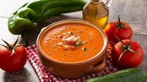

:
Gazpacho

-
Limpiamos bien los tomates y lavamos toda la verdura que vamos a emplear. Cortamos en cuartos los tomates y los añadimos a un bol grande.
- Pelamos los pepinos y les cortamos los extremos. Los cortamos en trocitos pequeños.
Cortaremos del mismo modo la cebolla pelada y el pimiento verde.
- Cortamos el pan en trozos pequeños y le añadimos un poco de agua, lo dejamos reposar durante unos 10 minutos. Así ayudamos a que el pan se ablande si está muy duro y será mucho más fácil de batir
- Pelamos el diente de ajo y como lo vamos a usar en crudo le quitamos el centro para que no repita. Lo añadimos al bol con el tomate y las demás hortalizas.
- Echamos el aceite de oliva virgen extra, el vinagre de Jerez y la sal. Trituramos con la batidora hasta que nos quede una salsa líquida. Pasamos esta salsa por un colador o un chino (un colador con los agujeros algo más grandes que los coladores metálicos de malla)
- Así retiramos posibles trozos de piel y pequeñas pepitas que hayan quedado hasta que nos quede lo más fino posible. Probamos si está bien de sal y si no rectificamos con un poco más
- Sólo nos queda meter el bol en la nevera y dejar que se enfríe, en un par de horas lo tendréis bien fresquito y perfecto para probar el mejor gazpacho de cerezas
- A la hora de la presentación, lo mejor es ponerlo en un plato hondo o cuenco y acompañar con unas lascas de jamón de bellota